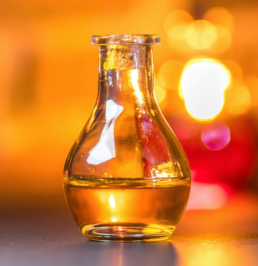
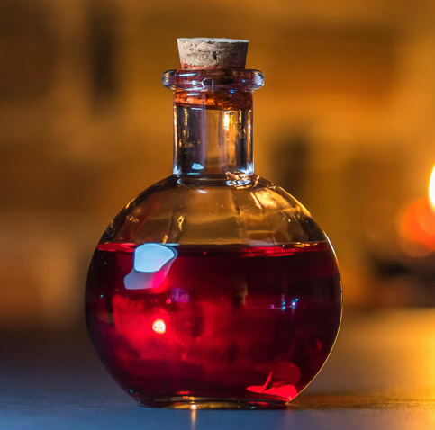
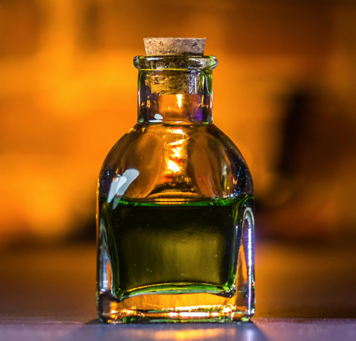
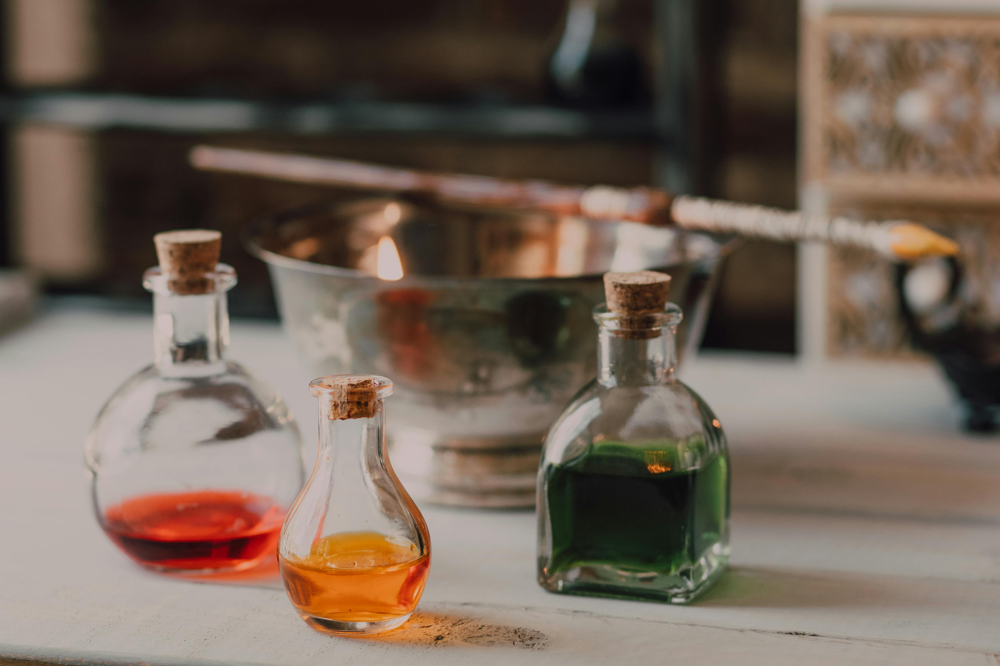

Our Most Popular Options

Potion of Restoration
Our most popular product is our Potion of Restoration. This powerful, tried-and-true potion significantly speeds up the body's natural healing processes, resulting in greatly reduced recovery times for all manner of physical injuries. Additionally, this potent elixir is infused with our famous painkilling mix, making your recovery virtually painless in addition to swift.

Nullification Elixir
We regularly receive customers who suffer from various illnesses, ailments, injuries, and just plain bad luck. Many do, and many do not know, that they are dealing with the nasty results of hexes and curses. Our Nullification Elixir effectively neutralizes and eradicates over three dozen of the most common magical maladies, and just may be the solution you need.

Special Spirit
Another popular and fun option we stock for our customers is our Special Spirit. The effects of this potion are unique to its user; no two people will experience the exact same effects. One person may be able to change their appearance at will, whilst another may find themselves ten times stronger than usual. The results of this potion are guaranteed always safe, and always temporary. We wonder what your Special Spirit will be?

Custom Potions
We also offer custom potions to our customers. If you cannot find what you're looking for in our catalogue or in our shop, then do not hesitate to inquire about our custom elixirs! Our skilled apothecaries will be more than happy to accomodate any specific needs you may have. You can either inquire in person at our shop, or using our contact page.
Additional Popular Options
- Sleeping Draught: This potion is the go-to solution for many insomniacs. A personal consultation with an apothecary is required to purchase this potion.
- Cordial of Confidence: Need a quick boost of confidence for a daunting task ahead? This fast-acting, short-lived potion may be what you need.
- Liquid Levitation: This sweet-tasting potion allows you to experience levitation and minor flight for up to 3 hours. Popular with hobbyists and athletes.
- Underwater Breathing Potion: Just as the name says, this potion will give you the ability to safely breathe underwater for up to 4 hours.
- Energy in a Bottle: This potion is a temporary pick-me-up for its user. Our customers have found its effects to be both more potent and less addictive than caffeine.